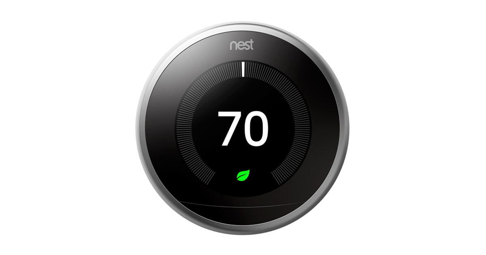
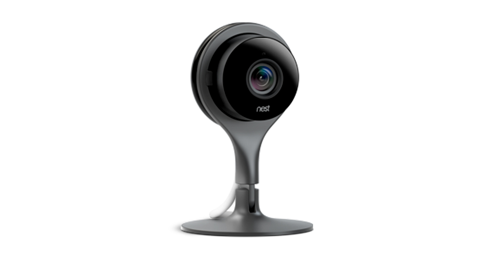
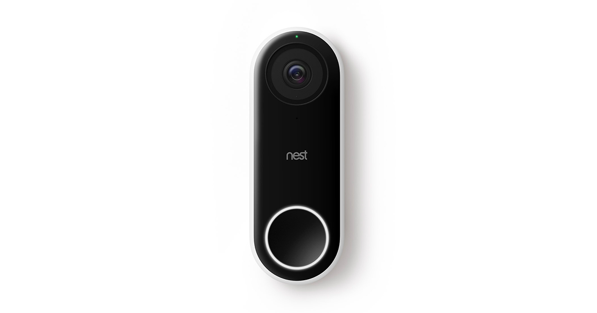

NEST products
Thermostats
SAVE ENERGY WITH NEST: Nest introduces the 3rd generation Nest Learning Thermostat. With four beautiful colors to choose from and an easy to read display, this thermostat will help make your home not only smart but energy efficient. With just a few manual adjustments, the Nest Thermostat can learn your habits and start to save you money by automatically adjusting the temperature.
Cameras
DON'T MISS A THING WITH NEST ALERTS: Whether the kids just came home from school or the dog has decided to eat those new pillows you just bought; the Nest Cam sees it all! Get alerts through your Nest App whenever the camera detects movement and activity. And the coolest part is that the Nest Cam can tell the difference between movement from say a hand getting into a cookie jar, and a person entering a room. Person Alerts and Activity Alerts can help keep your home safe even if you aren't there.
Doorbell
Nest Hello lets you know who’s there, so you never miss a thing. It replaces your existing wired doorbell and delivers HD video and bright, crisp images, even at night. It’s designed to show you everything at your doorstep – people head to toe or packages on the ground. And with 24/7 streaming, you can check in anytime. Or go back and look at a 3-hour snapshot history to see what happened.